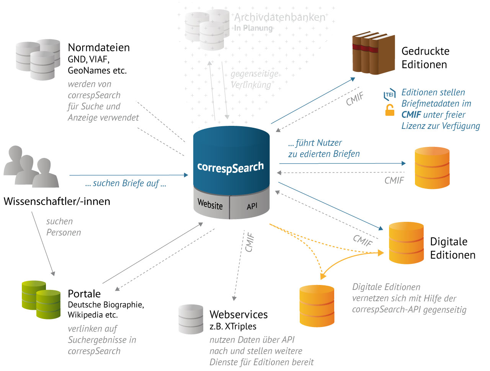
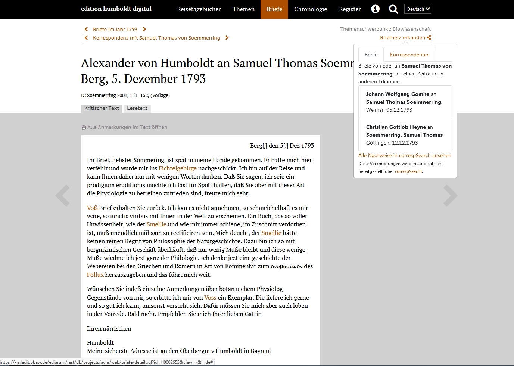
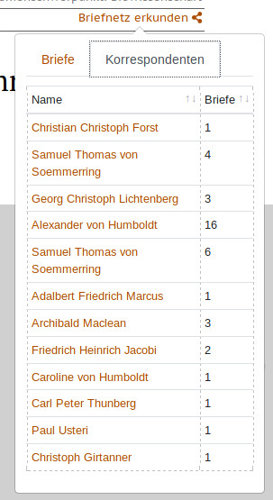
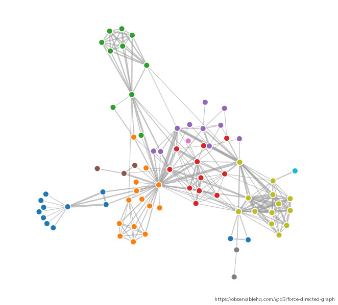
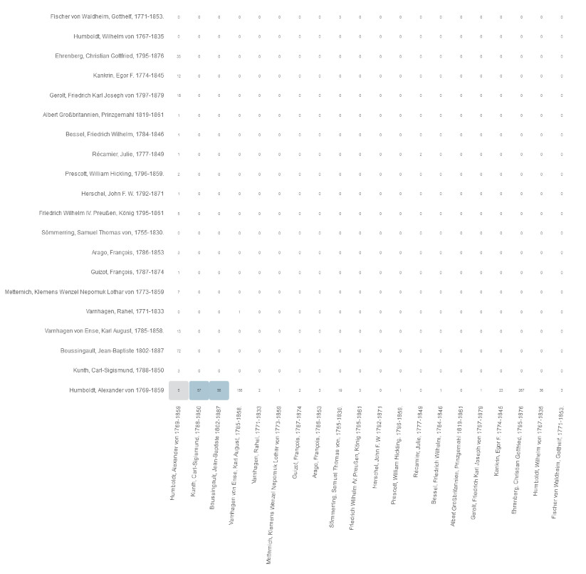

Explorative Visualisierungen für Korrespondenzmetadaten
Jonas Müller-Laackman
correspSearch.net - Briefeditionen vernetzen
Berlin-Brandenburgische Akademie der Wissenschaften


correspSearch
correspSearch ist ein Aggregierungsservice für Briefmetadaten, der an der Berlin-Brandenburgischen Akademie der Wissenschaften entwickelt wird.
Die frei lizensierten Briefmetadaten von aktuell über 50.000 Briefen werden dezentral von den Editionsprojekten bereitgestellt.
Es gibt keinen zeitlichen oder räumlichen Sammlungsschwerpunkt.
correspSearch ist kein Ersatz für das Ursprungsangebot, Nutzer:innen sollen Edition für weitere Informationen aufsuchen.
correspSearch
CMIF
Die in correspSearch aggregierten Metadaten liegen im Correspondence Metadata Interchange Format (CMIF) vor.
CMIF und <correspDesc> werden entwickelt von der TEI Correspondence SIG
Personen, Organisationen und Orte werden mit Normdaten-IDs bezeichnet (GND, VIAF, ...).
csLink
Vue.js-basiertes Widget für digitale Editionen zur Darstellung von anderen Briefen der Korrespondenten im selben Zeitraum.
Anzeige einer Liste von Personen des Korrespondentennetzwerks.
https://github.com/correspSearch/csLink
csLink
Praxis-Beispiel: edition humboldt digital
 Grundideen zur Erweiterung des Recherchezugangs um Visualisierungen
Explorative Visualisierung setzt voraus, dass aus der Visualisierung ein Rückbezug auf die Daten möglich ist. Die Visualisierung dient der Erkundung unentdeckter Muster und Strukturen.
- Zweistufige Darstellung von Korrespondenznetzwerken in Graphen.
- Kartendarstellung von Korrespondenznetzwerken.
- Erweiterung der Suche um eine kartenbasierte Suchfunktion (polygone Flächensuche).
Anforderungen
Die Visualisierungsfunktionen sollen nahtlos in correspSearch integriert werden.
Features sollen auf explorative Nutzungsszenarien in der Recherche mit Korrespondenzmetadaten reduziert werden.
Realisierung
Entwicklung auf der Basis von Vue.js, d3.js, Leaflet.js und OpenLayers mit Anbindung an die correspSearch API.
Anbindung an bestehende Applikationen wie csLink.
Bereits verfügbare Applikationen wie Palladio oder Nodegoat können als Stand-Alone-Applikationen nicht nahtlos integriert werden.
Problematisierung von Visualisierungen
Nicht jede Visualisierung eignet sich gleichermaßen für die Darstellung von Korrespondenznetzwerken.
Beispiel 1: Force-Directed Network Graph
Vorteil: Übersichtliche Darstellung von Personen in einem Netzwerk
mit der Möglichkeit von Richtungsdarstellung.
Nachteil: Willkürliche Hierarchisierung durch Positionierung der Nodes auf der Canvas.

Beispiel 2: Chord Diagram
Vorteil: Keine Hierarchisierung von Nodes durch zirkuläre Anordnung
und übersichtliche Darstellung von Korrespondenzen.
Nachteil: Keine übersichtliche Möglichkeit für Richtungsdarstellungen,
wird außerdem sehr unübersichtlich bei größeren Datenmengen.

Beispiel 3: Heat Map
Vorteil: Übersichtliche Darstellung mehrstufiger Korrespondenznetzwerke.
Nachteil: Bei unausgeglichen verteilter Aktivität im Korrespondenznetzwerk
ist die Darstellung nicht aussagegkräftig.

Ausblick: Karten und kartenbasierte Suche


Vielen Dank.
https://correspSearch.net/